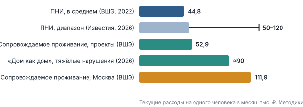
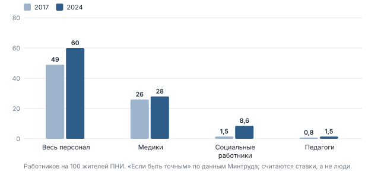
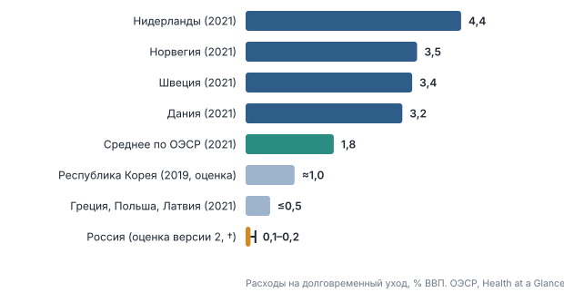
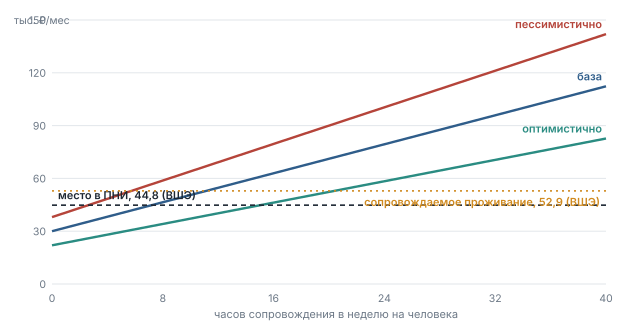

Рисунок 2.3. Качество жизни по критериям ВОЗ, баллы. НИУ ВШЭ, 2022 [5].
Реформа психоневрологических интернатов: что известно о ценах, что доказано за рубежом, что уже делают российские регионы и какой объём услуг можно купить на имеющиеся деньги.
Доклад для руководителей организаций социального обслуживания и региональных министров.
Доклад написан для людей, которые решают, на что тратить деньги в системе социального обслуживания: директоров ПНИ и региональных министров. Он отвечает на три вопроса. Сколько стоит содержание человека в разных форматах. Что показал зарубежный опыт. Что из этого применимо в России сейчас.
| Метка | Что значит |
|---|---|
| без метки | Цифра проверена в этой версии по публикации или по документу. Источник указан цифрой в квадратных скобках и приведён в приложении Г. |
| † | Цифра перенесена из прежней версии доклада вместе со ссылкой на источник. В этой версии первоисточник не открывался. Перед публичным выступлением её стоит сверить. |
| «оценка» | Расчёт автора на основе проверенных данных и допущений. Допущения названы рядом. В приложении Д есть скрипт, который пересчитывает всё заново. |
Главное исправление. В прежней версии цифры «8–24 тыс. ₽ в месяц в ПНИ» и «2–6 тыс. ₽ при сопровождаемом проживании» были представлены как стоимость содержания, и из них следовал вывод «сопровождаемое проживание дешевле в 4 раза». Проверка показала, что по описанию проекта «Если быть точным» это капитальные затраты на строительство и реновацию. Текущие расходы по тому же исследованию ВШЭ такие: ПНИ — 44,8 тыс. ₽, проекты сопровождаемого проживания — 52,9 тыс. ₽ в месяц на человека [1][5][6]. Разница небольшая и в другую сторону.
Поэтому пересчитан калькулятор (часть 7), сняты расчёты «экономия 35–38 %» и обновлены выводы. Доказанным остаётся другое: качество жизни при сопровождаемом проживании заметно выше при сопоставимых деньгах. Это тоже аргумент, но другой, чем «дешевле».
Остальное: обновлены число жителей ПНИ, правовая рамка, события 2023–2026 годов; убраны региональные кейсы, которые не удалось подтвердить (приложение В); добавлена доказательная база по деинституционализации; текст сокращён и очищен от лозунгов.
Цифры о числе жителей расходятся, потому что считают по-разному. «Если быть точным» по данным Минтруда насчитал 139 тысяч в ПНИ. Пресс-служба Минтруда сообщила «Ведомостям», что во всех отделениях для людей с ментальными нарушениями, включая отделения внутри других организаций, живёт более 174 тысяч человек и что число практически не менялось в 2022–2025 годах [2]. Число самих ПНИ снизилось с 536 в 2022 году до 466 в 2024-м, но авторы исследования и представители НКО связывают это в основном с объединением и переименованием учреждений, а не с закрытием [1][2]. Резкое падение численности на 26 тысяч (16 %) в 2023 году авторы не смогли объяснить и допускают смену формата отчётности [1].
Ещё несколько фактов из того же исследования [1]: 64 % жителей имеют вторую группу инвалидности и 31 % — первую; в 2022 году 98,6 % мест были заняты; в среднем интернат рассчитан на 289 мест (эксперты называют оптимальным размером 20–50), а самые крупные — около тысячи.
Важно, что ПНИ — не медицинская организация. Больница лечит и выписывает. Интернат организует жизнь на годы: проживание, питание, помощь в быту, занятость. Поэтому доклад говорит о социальном обслуживании, а не о психиатрии. Это та же задача, которую во всём мире решают в рамках долговременного ухода (long-term care).
Это форма поддержки, при которой человек живёт в обычном жилье, один или в небольшой группе, а специалисты помогают ему по индивидуальному плану: от нескольких часов в неделю до круглосуточного присутствия. Понятие введено Федеральным законом от 28.04.2023 № 137-ФЗ как статья 9.1 закона «О социальной защите инвалидов» и относится к инвалидам старше 18 лет, которые без посторонней помощи не могут вести самостоятельную жизнь [11]. Порядок организации утверждён постановлением Правительства № 910 от 03.07.2024 [11], методические рекомендации — приказом Минтруда № 85 от 25.02.2025 [12].
Учебное сопровождаемое проживание — временное обучение навыкам, обычно в квартире на территории ПНИ или НКО. Постоянное сопровождаемое проживание — человек живёт вне интерната. В официальной статистике Минтруда учитываются оба вида (около 7 тысяч человек в 2024 году), в независимой оценке «Если быть точным» постоянное проживание — не более 1,8 тысячи человек в 214 квартирах [1][4]. На начало 2024 года 74 % участников программы жили в учебных квартирах [4].
Разговоры об «объёме услуг» часто идут мимо друг друга, потому что объём измеряют разными единицами. У каждой своя цена и своё назначение.
| Единица | Что покупают | Кому подходит | Ориентир цены |
|---|---|---|---|
| Койка | Лечение, наблюдение врача в остром состоянии | Обострение, кризис; недели, не годы | Койко-день психиатрической больницы по региональным прейскурантам 1 100–4 840 ₽ † |
| Место | Проживание, питание, уход круглосуточно | Тяжёлая зависимость от помощи, нет жилья и поддержки | ПНИ: в среднем 44,8 тыс. ₽/мес [5]; диапазон оценок 50–120 тыс. ₽ [7] |
| Час | Помощь по дому, сопровождение, занятость — по потребности | Живёт дома или в квартире, нужна поддержка | 350–600 ₽ за час (оценка, допущение; замените своим тарифом) |
| Квартира с сопровождением | Своё жильё и помощь по индивидуальному плану | Часть жителей ПНИ после обучения и при поддержке | 52,9 тыс. ₽/мес в среднем по проектам; в Москве 111,9 [5][6] |
Мировая тенденция — двигаться по таблице снизу вверх по самостоятельности: от койки к месту, от места к часам и к квартире. Но это не значит, что каждая следующая единица дешевле. Цена зависит от того, сколько помощи нужно конкретному человеку, и это главный вывод части 2.
Житель ПНИ вносит плату за стационарное обслуживание. Предельный размер — до 75 % среднедушевого дохода получателя (статья 31 Федерального закона № 442-ФЗ; формулировка в этой версии с текстом закона не сверялась). На практике у большинства жителей основной доход — пенсия, поэтому говорят «75 % пенсии». Человеку остаётся оставшаяся четверть. По сообщению сайта pnp.ru, заработная плата работающих в интернатах инвалидов больше не учитывается при расчёте среднедушевого дохода [14]; дата и номер постановления в источнике не указаны, их стоит уточнить до публичного использования.
Единой официальной методики расчёта стоимости месяца в ПНИ на одного человека нет: на это указывают и аналитики, и авторы публикаций [1][6]. Поэтому в разговоре о деньгах нужно держать в голове сразу несколько оценок, которые получены разным способом.

Рисунок 2.1. Оценки текущих расходов на одного человека в месяц, тыс. ₽ [5][6][7]. Источники считали по-разному, поэтому бары нельзя читать как прямое сравнение.
| Оценка | Значение | Источник и оговорки |
|---|---|---|
| ПНИ, среднее | 44,8 | НИУ ВШЭ при поддержке Фонда Потанина, публикация 22.12.2022 [5][6]. Выборка и методика в публикациях не описаны. |
| Проекты сопровождаемого проживания, среднее | 52,9 | То же исследование. В обследованных проектах большинству подопечных нужно круглосуточное сопровождение [6]. |
| То же, Москва | 111,9 | То же исследование [6]. |
| ПНИ, диапазон | 50–120 | Исследования 2021–2022 годов в пересказе «Известий» (2026) [7]. |
| Дом сопровождаемого проживания «Дом как дом» (Ярославская область) | ≈90 | Руководитель благотворительной организации в «Известиях», 2026; при полной загрузке, для людей с тяжёлыми нарушениями. Ассистенты стоят 15 млн ₽ в год [7]. |
По данным ВШЭ, на одного штатного социального работника в ПНИ приходится в среднем 34,6 подопечных, в сопровождаемом проживании, как правило, один сотрудник на одного подопечного [5]. «Если быть точным» показывает, как менялась обеспеченность персоналом в ПНИ: с 49 до 60 работников на 100 жителей с 2017 по 2024 год, социальных работников стало почти в шесть раз больше (с 1,5 до 8,6 на 100 жителей) [1]. Три четверти основного персонала по-прежнему медики. Оговорка: Минтруд считает ставки, а не людей, поэтому рост может быть завышен [1].

Рисунок 2.2. Персонал ПНИ на 100 жителей, 2017 и 2024 годы [1].
ВШЭ измеряла качество жизни по критериям ВОЗ. Интегральный индекс — 76,9 балла из 100 в сопровождаемом проживании и 56,9 в ПНИ [1][5][6]. Наибольшая разница — в социальном благополучии (с 44,3 до 84,7 балла) и здоровье (с 69,1 до 85,2); безопасность почти не изменилась (с 51,6 до 57,1) [5]. Выборка и методика в публикациях не раскрыты, оценка сделана на проектах НКО, а не на случайной выборке. К выводам надо относиться как к сильному сигналу, но не как к окончательному доказательству.
Рисунок 2.3. Качество жизни по критериям ВОЗ, баллы. НИУ ВШЭ, 2022 [5].
ВШЭ оценила, что довести ПНИ до того же уровня качества потребовало бы увеличить текущие расходы в 2–3 раза и вложить не менее 200–300 млрд ₽ в реновацию [1][5]. Если разделить на 139 тысяч жителей, получается 1,4–2,2 млн ₽ на человека (расчёт автора). Для сравнения: однокомнатная квартира, которую делят три-четыре человека, в большинстве регионов обходится дешевле на каждого. Это не доказательство, но порядок величин показывает: «сохранение» не бесплатно.
Проверенные данные не позволяют говорить, что сопровождаемое проживание дешевле ПНИ. Они позволяют говорить: (1) цена близка; (2) качество выше; (3) для людей с лёгкой потребностью сопровождение может оказаться дешевле, для людей с круглосуточной потребностью — дороже; (4) вложения в «подтягивание» ПНИ до того же качества сопоставимы по масштабу с вложениями в квартиры. Эти выводы и лежат в основе калькулятора (часть 7).
Самое систематическое исследование по теме — DECLOC («Деинституционализация и жизнь в сообществе: результаты и затраты»), проведённое по заказу Европейской комиссии центром Тизард Кентского университета и партнёрами из нескольких стран. Отчёт Мансела, Кнаппа, Бидл-Браун и Бичама опубликован в 2007 году, он охватывал 28 стран [16]. Основные выводы:
В 2019 году в журнале BMJ Open вышел систематический обзор «Влияние деинституционализации для взрослых с интеллектуальными нарушениями на затраты» (May и соавторы). Он нашёл всего два подходящих исследования, обе британские когортные работы 1980–1990-х годов о людях, покидавших больницы длительного пребывания. Результаты противоположны: в одной работе средние затраты в сообществе были ниже (без проверки значимости), в другой — выше на 1, 5 и 12-й год, статистически значимо. Вывод авторов: «забота в сообществе не однозначно дешевле» и данные неубедительны, нужны современные исследования [17].
Нет научной основы обещать министру экономию «в разы». Есть научная основа утверждать: при сопоставимом качестве сообщество не дороже, дешёвые учреждения дают низкое качество, а выигрыш — в результатах для человека. Это честная позиция, и она устойчива к проверке.
ОЭСР измеряет расходы на долговременный уход, то есть всё, что общество тратит на помощь людям, которые не справляются с повседневной жизнью. В 2021 году в среднем по ОЭСР это около 1,8 % ВВП; самые высокие значения — Нидерланды (4,4 %), Норвегия (3,5 %), Швеция (3,4 %), Дания (3,2 %); Греция, Польша и Латвия тратят около 0,5 % или меньше [19]. Доля долговременного ухода в расходах на здравоохранение — в среднем 13 %, в странах с развитыми системами четверть и больше [19].

Рисунок 3.1. Расходы на долговременный уход, % ВВП [19][28]. Россия — авторская оценка версии 2 (†, не пересчитывалась): в российской статистике такой строки нет, поэтому сравнение приблизительно.
Для России отдельной оценки в ОЭСР нет. В версии 2 была дана авторская оценка 0,1–0,2 % ВВП† (бюджетные расходы на стационарное и надомное социальное обслуживание, расчёт снизу вверх). В этой версии она не пересчитывалась и показана на графике только как ориентир. Отдельно стоят расходы системы долговременного ухода (СДУ) для пожилых и инвалидов: в 2026 году на неё выделено 31,5 млрд ₽, в рамках федерального проекта «Старшее поколение» заложено 362 млрд ₽, из них 307 млрд — на организацию ухода [9][10].
Комитет ООН по правам инвалидов в 2022 году принял руководящие принципы по деинституционализации, в том числе в чрезвычайных ситуациях. Они дополняют Замечание общего порядка № 5 (2017) по статье 19 Конвенции о праве жить самостоятельно и быть включённым в общество и указывают, что осуществление прав по статье 19 нельзя приостанавливать даже в чрезвычайной ситуации [29]. Россия ратифицировала Конвенцию о правах инвалидов в 2012 году.
Европейские организации, включая ENIL и Европейскую коалицию за жизнь в сообществе, неоднократно показывали, что структурные фонды ЕС шли на содержание и строительство учреждений. Доклад 2010 года «Wasted time, wasted money, wasted lives…» рассматривал Венгрию и Румынию; брифинг ENIL 2018 года по данным 18 стран и теневой доклад 2025 года фиксируют, что средства всё ещё идут в большие учреждения, малые групповые дома и мастерские вместо услуг в сообществе [18]. Для нас урок практический: источник денег не заменяет правил, на что их можно тратить.
В каждой карточке три блока: что подтверждено, чего не хватает для выводов, что можно взять России. Сумма в национальной валюте указана так, как её публикует источник.
Что известно. Отдельное обязательное страхование ухода (Pflegeversicherung) действует с 1995 года. С 1 января 2025 года взнос — 3,6 % от облагаемого дохода, для бездетных 4,2 % [21]. Расходы в 2025 году выросли на 8,2 % до 73,8 млрд €, поступления от взносов — 72,5 млрд €; дефицит удалось избежать только за счёт федерального кредита 500 млн €. В 2024 году дефицит составил 1,54 млрд €. На 2026 год планируются расходы около 79 млрд € при взносах 75,3 млрд €; без нового кредита 3,2 млрд € результат был бы минус 4,4 млрд € [20]. В прежней версии стояла цифра 63,3 млрд € за 2024 год†. Из роста на 8,2 % следует, что в показателе GKV-Spitzenverband расходы 2024 года составляли около 68,2 млрд €, то есть показатель шире, и две цифры нельзя ставить рядом. Получателей около 6 млн человек [20].
По прежней версии, средние расходы на человека в год — 9 172 € при уходе на дому и 26 978 € в стационаре†; пособие Pflegegeld (деньги семье, которая ухаживает сама) составляло 27 % расходов†.
Чего не хватает. Система хронически дефицитна, резервы тают. Без федеральных кредитов она не сводится.
Что известно. Общие расходы на взрослое социальное обслуживание в Англии в 2024/25 году составили 34,5 млрд £ (+7,9 % в текущих ценах, +4,1 % в реальных). Валовые текущие расходы местных властей — 29,4 млрд £, из них 80 % (23,6 млрд £) — долговременная поддержка. Недельная цена места в доме ухода выросла на 7 % до 1 185,55 £ [22]. Взносы получателей выросли на 14 % и стали главным источником доходов местных властей после основного финансирования [22]. Отчёт теперь публикует Министерство здравоохранения и социальной защиты (DHSC), а не NHS England, поэтому данные нельзя напрямую сравнивать с прежними годами [22].
По прежней версии†: сопровождаемое жильё стоит около 1 569 £ в неделю (232 жильё + 1 337 помощь), место в доме ухода — 1 760 £, лечебное отделение для людей с расстройствами развития — 3 500 £. Источники — Mencap и Housing LIN.
Чего не хватает. Система хронически недофинансирована, реформа софинансирования отменена в 2025 году†.
Что известно. Хогевейк в Веспе (рядом с Амстердамом) — «деревня» для людей с тяжёлой деменцией, открыта в 2009 году: 23 дома, около 150 жителей†, дома по «стилям жизни» (подбор по укладу, а не по диагнозу). Оператор Vivium заявляет, что деревня финансируется по тому же тарифу, что и обычные дома ухода.
Чего не хватает. Канадское агентство CADTH не нашло опубликованных оценок самого Хогевейка и отметило, что объективных доказательств улучшения клинических результатов и качества жизни, а также данных об эффективности затрат недостаточно; воспроизведение модели потребует дополнительных капитальных затрат из-за большой площади [23]. Поэтому утверждения «жители активнее и получают меньше лекарств», которые были в прежней версии доклада, сняты как недоказанные.
Япония. Страхование долговременного ухода (LTCI) введено в 2000 году. Расходы в 2022 финансовом году составили 11,2 трлн иен† (источник — Nippon.com со ссылкой на Минздрав). Средняя длительность психиатрической госпитализации уменьшилась с примерно 500 дней в 1990 году до 266 дней в 2018 году по статистике Минздрава; метод расчёта критикуют, так что международное сравнение условно [27]. Коек в психиатрии на 100 тысяч жителей около 267 при среднем по ОЭСР около 66 [27].
Корея. Страхование долговременного ухода введено в 2008 году. К 2019 году суммарные расходы достигли около 1,0–1,1 % ВВП (в зависимости от источника), расходы по страхованию выросли в среднем на 15,2 % в год в 2009–2018 годах, доля людей 65+, охваченных услугами, поднялась с 3,9 % (2008) до 8,4 % (2018) [28]. В прежней версии было утверждено, что Корея за 13 лет выросла с 0,1 до 1 % ВВП†; данные по 2008 году в этой версии не подтверждены.
Что известно. Закон 180 («закон Базальи», 1978) прекратил госпитализацию в старые психиатрические больницы; последняя больница закрыта к концу 1990-х†. Описания системы Триеста за 2006–2012 годы совпадают: на примерно 240 тысяч населения работают четыре центра психического здоровья, открытые круглосуточно; каждый обслуживает около 60 тысяч жителей, имеет 6–8 кроватей для временного пребывания; в больнице общего профиля — 6 кроватей, в основном для ночных экстренных случаев; около 45 мест в поддерживаемом жилье; штат — около 1 сотрудника на 1 000 жителей [30]. В 1971 году в психиатрической больнице было около 1 200 коек [30].
Чего не хватает. Свежих данных (2023–2024) в этой версии нет. Источники — обзоры 2006–2014 годов; один из них отмечает, что модель находится под угрозой, без уточнения [30]. Цифры о числе мест в защищённых резиденциях по Италии и числе социальных кооперативов в прежней версии не подтверждены и убраны (приложение В).
Что известно. Housing First даёт постоянную квартиру без условий (трезвость, лечение), а поддержка прикладывается к адресу. Долговременная бездомность в Финляндии за 2008–2022 годы снизилась на 68 % [24]. В пилоте Министерства окружающей среды экономия составила около 14,98 тыс. € на человека в год†.
Что изменилось. Тренд развернулся. По данным ARA от 10.02.2025, в Финляндии насчитали 3 806 бездомных, на 377 больше, чем годом ранее — первый рост после 11 лет снижения. Число людей, ночующих на улице, в подъездах и ночлежках, выросло на 50 % до 694. Причины, названные городами: рост стоимости жизни, сокращение социальных выплат, высокие арендные ставки, вдвое урезанный бюджет консультаций по жилью. Правительственная программа «устранить долговременную бездомность к 2027 году» остаётся целью [24]. Прежнее утверждение «единственная страна ЕС, где бездомность сокращается» теперь неверно.
Оценка эффективности. Канадский рандомизированный эксперимент At Home/Chez Soi показал, что Housing First повышает стабильность жилья; затраты на программу по промежуточным отчётам компенсировались в среднем на 54 %, для группы с высокой потребностью — почти полностью (разные отчёты называют от 96 до 154 %). Вывод авторов: программа даёт значительную компенсацию затрат, но не всегда окупается полностью [25].
Что известно. В 1987 году Дания приняла закон, по которому новые дома ухода строятся как отдельные квартиры (plejeboliger) с кухней, ванной и входной дверью. Жилец — наниматель с полной пенсией, платит аренду и сам решает, какие услуги покупать у дома† (источник — текст закона на retsinformation.dk). С 2015 года закреплён подход hverdagsrehabilitering — трёх-двенадцатинедельная интенсивная тренировка бытовых навыков вместо пассивной помощи†.
Чего не хватает. Датская система также сокращала лёгкую помощь. По Nuffield Trust (2025)†: охват домашним уходом людей 80+ упал с 43 % в 2008 году до 27 % в 2020; в Швеции доступность мест для 80+ упала с 20 % до 11 %, очередь выросла до 64 дней†. Разница в доступности между норвежскими муниципалитетами — от 32 % до 76 %†.
Что известно. Закон 10.216 (2001) запустил закрытие психиатрических больниц и развитие общинных служб (CAPS). Научные публикации подтверждают: койки в 1995–2005 годах сократились на 41 % (с 5,4 до 3,2 на 10 тысяч жителей); доля психиатрических госпитализаций в бюджете снизилась с 95,5 % до 49 %; с 2006 года внебольничные расходы превышают больничные; в конце 2010-х насчитывалось около 2,5 тысяч CAPS [26]. По обзору материалов конференции, доля внебольничных расходов достигла 79,39 % в 2013 году [26]. Цифры «24,8 % → 79,4 %» из прежней версии как рост 2002 → 2014 годов подтвердить не удалось (приложение В).
Чего не хватает. Расходы на душу населения по тому же исследованию сократились (с 2,66 до 1,95 долл.): реформа шла на ограниченных деньгах. Реформа неравномерна по регионам [26].
Чужие провалы полезнее чужих успехов, потому что их можно использовать как список проверок.
По Treatment Advocacy Center, в 2014 году около 383 тысяч человек с тяжёлыми психическими расстройствами находились в тюрьмах и следственных изоляторах, примерно в десять раз больше, чем в оставшихся государственных психиатрических больницах†. Закон 1963 года обещал 1 500 общинных центров, построена меньше половины, финансирование сократили в 1980-е. Цифры «31 000 $ в год за тюрьму против 10 000 $ в сообществе» из прежней версии не подтверждены и убраны (приложение В). Урок: сначала альтернатива, потом выписка.
31 мая 2011 года программа BBC Panorama показала скрытую съёмку из частной больницы для людей с расстройствами развития. 11 сотрудников были привлечены к ответственности, шестеро получили реальные сроки [31]. Оператор Castlebeck в сентябре 2013 года обанкротился [31]. Из 48 человек, живших в больнице, к июню 2014 года десять оставались в стационарах, остальные были в домах ухода, сопровождаемом жилье или собственных квартирах [31]. Программа Transforming Care по возврату людей домой шла годами: по материалам юридической фирмы Leigh Day, и в 2021 году сотни человек оставались в стационарах [31]. Главный урок: законов и денег было достаточно, не хватало локальных служб, жилья и внешнего взгляда внутрь закрытых учреждений.
В 1989 году газета Observer назвала остров Лерос «европейской грязной тайной»: около 1 200 человек жили в бывших казармах†. Европейская комиссия выделяла средства на реформу с 1984 года, но заметных изменений не было. Реформа пошла только когда на остров приехала команда с методом (специалисты из Триеста) и несколько лет работала с жителями, персоналом и местной экономикой†. В 2009 году BBC нашла в греческой больнице Дромокраитион привязанных пациентов и две медсестры на 30 человек†. Урок: проектное финансирование без постоянной статьи бюджета откатывается.
См. 4.7: когда лёгкие услуги сократили, люди раньше времени переходили в более дорогие формы.
| Риск | Что видно в России | Источник |
|---|---|---|
| Переименование вместо реформы | К концу 2025 года ПНИ переименованы как минимум в 41 регионе (первой была Москва, 2022). Эксперты считают это в основном внешним изменением. | [1][3] |
| Новые большие здания | Минтруд и Минстрой объявляли программу строительства современных домов престарелых и ПНИ на 40 млрд ₽ в рамках «Старшего поколения»; с 2025 года федеральные средства идут на строительство и реновацию региональных учреждений. Эксперты называют это препятствием реформе: деньги идут на крупные интернаты по старой модели. | [2][3][32] |
| Учебное проживание как конец пути | 74 % участников программы — в учебных квартирах, часто на территории ПНИ. Часть возвращается в интернат. | [4] |
| Большие группы | Средняя группа в квартирах — 7–8 человек при рекомендации Минтруда 3–4. | [1][4] |
| Отказ по формальной причине | Регионы иногда отказывают в сопровождаемом проживании, ссылаясь на «нецелесообразность» жизни вне стационара; проекты для самых уязвимых в основном ведут НКО. | [4] |
| Неустойчивое финансирование | Услуга, которой нет в региональном перечне социальных услуг, не финансируется. Ленинградская область решила это отдельным перечнем из 14 услуг. НКО нужна стабильная финансовая база: при потере гранта услуги прерываются. | [8] |
| Недееспособность как стена | 74 % жителей недееспособны, опекун — обычно интернат. Закон о распределённой опеке отклонён в 2025 году. Без этого выход из ПНИ зависит от решения директора. | [1][3][13] |
| Год | Событие | Ист. |
|---|---|---|
| 2016 | Разработана первая дорожная карта реформы ПНИ | [1] |
| 2017 | Первые методические рекомендации Минтруда по сопровождаемому проживанию | [1][8] |
| 2019 | Субсидии регионам на сопровождаемое проживание в рамках «Доступной среды» | [8] |
| 2020 | Приказ Минтруда закрепил жизнь вне ПНИ как приоритет | [1] |
| 2022 | Пилот Минтруда в Нижегородской и Воронежской областях; исследование ВШЭ о стоимости и качестве | [5][8] |
| 2023 | № 137-ФЗ от 28.04.2023: сопровождаемое проживание в законе о социальной защите инвалидов (статья 9.1). Приказ Минтруда № 606н от 28.07.2023 о порядке определения объёма услуг | [11] |
| 2024 | Постановление Правительства № 910 от 03.07.2024 об организации сопровождаемого проживания | [11] |
| Февраль 2025 | Госдума отклонила законопроект о распределённой опеке | [13] |
| 2025 | Приказ Минтруда № 85 от 25.02.2025 — методические рекомендации; в силу с 1 марта 2025 | [12] |
| 2026 | СДУ охватывает около 184 тысяч человек (11 % нуждающихся), цель на 2030 год — 30 % | [9][10] |
В источниках расходятся даты вступления статьи 9.1 в силу (1 сентября 2023 или 2024 года); для юридических целей нужно сверить текст на pravo.gov.ru [11].

Рисунок 6.1. Жители ПНИ, потенциал перехода и фактический охват, тыс. человек [1][2][4].
Данные Минтруда о сопровождаемом проживании: около 7 тысяч человек в 2024 году (в 2,6–2,7 раза больше, чем в 2018-м), по итогам 2025 года — около 8 000 человек с инвалидностью, из них 6 400 с ментальными нарушениями [2][4]. Независимые аналитики насчитывают постоянное проживание не более чем у 1,8 тысячи человек (214 квартир, в среднем по 7–8 человек) [1][4]. Лидеры по развитию — Санкт-Петербург, Ленинградская и Свердловская области [4]. Минтруд называет передовыми регионами Санкт-Петербург, Пензенскую, Ленинградскую, Свердловскую, Псковскую, Челябинскую области и Якутию [1].
| Регион | Что сделано | Ист. |
|---|---|---|
| Нижегородская область | Обследовали 350 жителей ПНИ: у каждого пятого потребность не более 12 часов сопровождения в неделю. Создан специализированный дом на 11 человек. Двое бывших детей-сирот получили жильё и переехали в собственные квартиры. На 2025 год — ремонт ещё четырёх квартир и разработка стандартов услуг. | [8] |
| Ленинградская область | «Мультицентр социальной и трудовой интеграции» сопровождает 150 человек с ментальной инвалидностью. Создан дополнительный перечень из 14 услуг, включая помощь в управлении финансами. Работодатель получает субсидию до 500 тыс. ₽ на специализированное рабочее место; наставникам платят стимулирующие выплаты до трёх месяцев. | [8] |
| Санкт-Петербург | По отчёту уполномоченного по правам человека за 2024 год, более 70 % индивидуальных программ реабилитации трудоспособных жителей бывших ПНИ нуждаются в пересмотре; выявлено 68 кандидатов на самостоятельное проживание с индивидуальным сопровождением и 48 — на групповое. | [4] |
| Свердловская область (Верх-Нейвинский) | Организация «Благое дело» (программа «Социополис») готовила к открытию дом сопровождаемого проживания на 7 человек в усадьбе 1880 года рядом со своими мастерскими. Сведений о пекарне, указанной в прежней версии, не найдено; статус дома после 2021 года не уточнён. | [15] |
| Ярославская область («Дом как дом») | Благотворительный проект для людей с тяжёлыми нарушениями: около 90 тыс. ₽ в месяц на жителя при полной загрузке, 15 млн ₽ в год — ассистенты. | [7] |
| Якутия | Госкорпорация ВЭБ.РФ и организация ГАООРДИ планировали к концу 2024 года открыть отделение постоянного сопровождаемого проживания на 12 человек и сопровождение на дому ещё для 18. В республике около 1 100 человек с ментальными нарушениями живут в ПНИ или получают иную госпомощь. Это плановые показатели; итоги не проверены. | [33] |
СДУ — отдельная федеральная система для пожилых и людей с инвалидностью, нуждающихся в уходе; не путать с сопровождаемым проживанием. В июне 2026 года, по данным Минтруда, она охватывает около 184 тысяч человек (11 % нуждающихся; годом ранее 10,5 %), в сельской местности — 45 тысяч; цель на 2030 год — 30 % (около 500 тысяч человек). В 2026 году на неё выделено 31,5 млрд ₽; порядок регулирует приказ Минтруда № 732 от 27.12.2024 [9][10]. Для темы доклада СДУ важна тем, что она создаёт то, чего не хватает при выходе из ПНИ: надомный уход и подготовленных ухаживающих. Какая часть жителей ПНИ реально использует СДУ, в доступных публикациях не указана.
| Барьер | Суть | Что делают в регионах и за рубежом |
|---|---|---|
| 1. Недееспособность | 74 % жителей недееспособны; опекун — директор. Без распределённой опеки человек зависим от интерната. | Ленинградская область: услуга «помощь в управлении финансами». Минтруд рекомендует работу по восстановлению статуса; в 2024 году число людей, восстановивших дееспособность из частично недееспособных, выросло примерно в 1,5 раза [2]. Предложение Центра лечебной педагогики — передавать функции опекунов организациям-поставщикам услуг [8]. |
| 2. Жильё | У человека нет квартиры, куда выписываться; квартиры, положенные детям-сиротам, нельзя использовать, пока человек в интернате. | Нижний Новгород: восстановление сиротских прав. Нужно законодательное решение о выделении таких площадей под сопровождаемое проживание [8]. |
| 3. Пенсия и плата | До 75 % дохода идёт на оплату места. | Решение федеральное; регион может подготовить расчёт и пилот. Влияет на самостоятельность и на то, кто платит, не на полную стоимость. |
| 4. Финансирование «на место» | Бюджет считается по койкам; сократил места — потерял деньги. | Норматив «на человека с потребностью» вместо «на место» и перечень услуг, который включает сопровождение (опыт Ленобласти). |
| 5. Кадры | Сопровождающих как профессии мало. Зарплаты социальных работников неконкурентны [9]. | Обучение действующих сотрудников ПНИ, методика и тариф; кейс-менеджер (Япония). |
| 6. Страх ответственности | «Что, если с человеком что-то случится вне стен?» | Круглосуточный центр кризисной поддержки в районе (Триест), поэтапный переход с учебной квартирой, понятный порядок действий при обострении. |
Калькулятор строится на двух проверенных входных данных (44,8 и 52,9 тыс. ₽ в месяц по ВШЭ) и на допущениях, которые названы отдельно. Допущения нужно заменить данными своего региона. В приложении Д есть скрипт, который пересчитывает всё при изменении исходных цифр.
| Единица | На 1 млн ₽ | Основание |
|---|---|---|
| Место в ПНИ | 1,9 человека | 44,8 тыс. ₽ × 12 мес = 537,6 тыс. ₽ в год (ВШЭ) |
| Сопровождаемое проживание | 1,6 человека | 52,9 тыс. ₽ × 12 = 634,8 тыс. ₽ (ВШЭ) |
| Сопровождаемое проживание, Москва | 0,7 человека | 111,9 тыс. ₽ × 12 = 1 342,8 тыс. ₽ (ВШЭ) |
| Часы сопровождения | 1 700–2 900 часов | Допущение: 350–600 ₽ за час. Это 32–55 часов в неделю в течение года, то есть около 3–5 человек с нагрузкой 12 часов в неделю |
Объём услуг на деньги не определяется одной цифрой. Один и тот же миллион даёт два места или три-пять человек на лёгком сопровождении. Всё зависит от того, кому что нужно. Поэтому первый шаг — обследование.
Простая модель. Полная стоимость жизни в квартире = (часы в неделю × 52 ÷ 12 × цена часа) + жильё и быт. «Жильё и быт» — доля аренды и коммунальных услуг, питание, одежда: 22, 30 или 38 тыс. ₽ в месяц (оптимистичный, базовый, пессимистичный случай). Это допущения, а не данные. Цена часа — 350, 475 или 600 ₽. Сравнивается с 44,8 тыс. ₽ за место в ПНИ.

Рисунок 7.1. Полная стоимость жизни в квартире в зависимости от числа часов сопровождения (модель автора) в сравнении с данными ВШЭ.
| Часов в неделю | Оптимистично | База | Пессимистично |
|---|---|---|---|
| 6 | 31,1 | 42,4 | 53,6 |
| 12 | 40,2 | 54,7 | 69,2 |
| 24 | 58,4 | 79,4 | 100,4 |
| 40 | 82,7 | 112,3 | 142,0 |
| Точка безубыточности | 15 ч/нед | 7 ч/нед | 3 ч/нед |
Таблица не предсказывает цены. Она показывает чувствительность. Если жильё и быт обходятся дёшево, а час сопровождения стоит недорого, сопровождение до 15 часов в неделю дешевле места в ПНИ. Если дорого — не дешевле даже на 3 часах. Знак разницы зависит от двух чисел, которые есть у каждого региона: тарифа часа и стоимости жилья. Это и есть причина, по которой прежний вывод «в четыре раза дешевле» был некорректным: он опирался на цифры, не относившиеся к текущим расходам.
В модели сопровождение считается индивидуальным. В квартире на 3–4 человека часть времени специалиста делят между жителями, ночное присутствие — одно на группу; это снижает цену на человека, но в модель не заложено.
ПНИ на 400 мест. Годовые текущие расходы: 400 × 44,8 тыс. ₽ × 12 = 215 млн ₽. Допустим, как в Нижегородской области, у 20 % жителей (80 человек) потребность не превышает 12 часов в неделю; это допущение для иллюстрации, долю нужно измерить.
| Допущение | Квартира, тыс. ₽/мес на человека | Разница на 80 человек |
|---|---|---|
| Оптимистично (350 ₽/час, жильё и быт 22) | 40,2 | −4,4 |
| База (475 ₽/час, 30) | 54,7 | +9,5 |
| Пессимистично (600 ₽/час, 38) | 69,2 | +23,4 |
Дополнительно, если перевести ещё около 100 человек (всего 45 %) в групповое сопровождаемое проживание по средней цене ВШЭ 52,9 тыс. ₽, это +9,7 млн ₽ в год к месту в ПНИ; при московской цене 111,9 — +80,5 млн ₽.
| Механизм | Где применяют | Оговорка |
|---|---|---|
| Перенаправление части бюджета со «статьи ПНИ» на «статью сопровождения» | Бразилия: расходы на внебольничную помощь превысили больничные с 2006 года [26] | Работает, если потеряна часть мест, иначе увеличивается общий бюджет |
| Дополнительный перечень социальных услуг | Ленинградская область: 14 услуг [8] | Услуга, которой нет в перечне, не финансируется |
| Субсидия работодателю за рабочее место | Ленинградская область: до 500 тыс. ₽ [8] | Из существующих линий поддержки занятости |
| Внебюджетное финансирование под результат | Якутия: проект с ВЭБ.РФ [33]. Англия: Golden Lane Housing, 21 млн £† | В России итоги подобных проектов в этой версии не подтверждены |
| Федеральные субсидии «Доступная среда» | С 2019 года [8] | Размер регионального доступа нужно уточнять |
| Совместные расчёты с соседними бюджетами (здравоохранение, МВД) | Финляндия, США (идея) | Требует данных о вызовах скорой, днях в больнице и полицейских эпизодах до и после |
| Шаг | Что делать | Срок |
|---|---|---|
| 1. Обследование | Междисциплинарная оценка всех жителей ПНИ: потребность в часах, навыки, жильё, семья, дееспособность. Разделить на когорты: лёгкая (до 12 часов в неделю), средняя, тяжёлая. Метод — нижегородский [8]. | 3–6 месяцев |
| 2. Расчёт | Посчитать по таблицам части 7 на своих тарифах. Определить, где рост охвата, а где экономия, и какой нужен переходный фонд. | 1–2 месяца |
| 3. Документы | Региональный порядок сопровождаемого проживания (с учётом постановления № 910 и приказа № 85), перечень услуг, норматив «на человека», порядок учебных квартир, субсидия работодателю. | 6–12 месяцев |
| 4. Первая волна | 15–30 человек из лёгкой когорты; учебная квартира → постоянное проживание; первые рабочие места. Метрики: индекс качества жизни, цена на человека, вызовы скорой, возвраты в ПНИ. | год 1–2 |
| 5. Масштаб | Перепрофилирование корпусов в малые дома, жилищный фонд, подготовка кейс-менеджеров. Цели по размеру групп (3–4) и по числу людей вне ПНИ. | год 2–5 |
| Метрика | Как мерить |
|---|---|
| Число людей вне ПНИ через 12 месяцев | Постоянное проживание, не учебное |
| Возвраты в ПНИ | Доля вернувшихся за первый и второй годы |
| Качество жизни | Индекс по критериям ВОЗ (методика ВШЭ), до и после |
| Цена на человека | Полная стоимость, включая жильё и быт, а не только сопровождение |
| Размер групп | Среднее и максимум по квартирам |
| Занятость | Работа на открытом рынке, а не в мастерских при учреждении |
| Безопасность | Вызовы скорой, экстренные госпитализации, жалобы, смерти |
| Термин | Значение |
|---|---|
| Долговременный уход (LTC) | Всё, что нужно человеку, не справляющемуся с бытом из-за состояния здоровья: помощь с едой, гигиеной, жильём, передвижением, общением. |
| Деинституционализация | Переход от больших учреждений к жизни в обычном жилье с поддержкой. Не закрытие здания, а перенос услуги к человеку. |
| Сопровождаемое проживание | Российская форма поддержки жизни в квартире или малой группе по индивидуальному плану; закреплено в ст. 9.1 181-ФЗ. |
| Учебное сопровождаемое проживание | Временное обучение навыкам, часто на территории ПНИ. |
| Housing First | Постоянное жильё без предварительных условий; поддержка подключается следом. |
| Reablement | Короткая интенсивная программа восстановления бытовой автономии (в Дании 3–12 недель). |
| Персональный бюджет, прямые выплаты | Деньги идут человеку, который сам нанимает помощников (Англия — direct payments, Германия — Pflegegeld). |
| Распределённая опека | Возможность иметь нескольких опекунов, не только директора интерната. Законопроект отклонён в феврале 2025. |
| Двойное финансирование (double running) | Период, когда оплачиваются и старая система, и новая; обычно 2–3 года. |
| Кейс-менеджер | Специалист, собирающий для человека пакет услуг (Япония). |
| Трансинституционализация | Ложная деинституционализация: человек покидает интернат, но оказывается в другой закрытой структуре (тюрьма, ночлежка, частный пансион без контроля). |
| СДУ | Система долговременного ухода — федеральная система для пожилых и людей с инвалидностью. |
| ИППСУ | Индивидуальная программа предоставления социальных услуг. |
Что изменено по сравнению с версией 2 и почему.
| № | Было | Стало и причина |
|---|---|---|
| 1 | ПНИ стоит 8–24 тыс. ₽ в месяц; сопровождаемое проживание 2–6 тыс. ₽; «в 4 раза дешевле» | Текущие расходы по ВШЭ: 44,8 и 52,9 тыс. ₽. Диапазоны 8–24 и 2–6 — капитальные затраты по пересказу «Если быть точным». Тезис «дешевле в 4 раза» снят. |
| 2 | Регион N: экономия 35–38 %; «датская норма снимает дилемму» | База расчёта (16 тыс. ₽) была неверной, а пенсия, меняющая плательщика, не уменьшает полную стоимость. Заменено моделью с чувствительностью (часть 7). |
| 3 | В ПНИ 160–220 тыс. жителей; потенциал 70–100 тыс. | 139 тыс. (2024) по «Если быть точным»; 174 тыс. по Минтруду в отделениях всех организаций. Потенциал 45 % — около 63 тыс. |
| 4 | «Менее 1 774 человек в 214 квартирах» | Уточнено: не более 1,8 тыс. на постоянном проживании; Минтруд считает около 7 тыс. вместе с учебным. |
| 5 | Пилот Минтруда «завершается в 2025 году» | Устарело. Добавлены приказ № 85 (2025), отклонение закона о распределённой опеке (2025), СДУ, строительство новых ПНИ. |
| 6 | Хогевейк: «жители активнее и получают меньше лекарств» | CADTH не нашёл независимых оценок; утверждение снято. |
| 7 | Финляндия — «единственная страна ЕС, где бездомность сокращается» | В 2024 году первый рост после 11 лет снижения (3 806, +377). |
| 8 | Бразилия: 24,8 % → 79,4 % | Подтверждено другое: 95,5 % → 49 % (1995–2005), перевес внебольничных расходов с 2006 г., 79,39 % в 2013 г. по обзору. |
| 9 | Германия: 63,3 млрд € (2024) | Добавлены данные 2025 (73,8 млрд €), взнос 3,6 %, кредиты; 63,3 помечено †. |
| 10 | Региональные кейсы: Челябинск (ВЭБ.РФ/РМК), Тюмень, ХМАО, Курган, ЯНАО, Москва | Не подтверждены, убраны (приложение В). Добавлены проверенные: Петербург, Якутия, Ярославская область. |
| 11 | Курсы валют и пересчёты в рубли | Убраны: курсы менялись, пересчёты создавали ложную точность. Суммы даны в национальной валюте. |
| 12 | Опечатки и сбои текста («Кремлёв... то есть…», «навук», дубли номеров страниц) | Исправлено. |
| 13 | Лозунги и риторические обороты («самый ценный кейс», «Осталось применить») | Убраны; текст сокращён и приведён к фактам. |
| 14 | Нет раздела о доказательной базе по затратам | Добавлена часть 3: DECLOC (2007), обзор BMJ Open (2019), опыт ЕС. |
Эти утверждения были в версии 2. При проверке подтверждения не найдено; они удалены из основного текста. Это не значит, что они неверны. Перед использованием нужно искать первоисточник.
Метка † в тексте означает цифры, перенесённые из версии 2 с указанным источником, которые в этой версии не перепроверялись: немецкие показатели Министерства здравоохранения, британские цены Mencap/Housing LIN, число домов Хогевейка, пилот Housing First 14 980 €, показатели Nuffield Trust по Дании и Швеции, число заключённых с психическими расстройствами в США, Лерос, Golden Lane Housing 21 млн £, ¥11,2 трлн в Японии.
В репозитории лежит папка report/src. В ней:
calc.py — все формулы и допущения в одном месте. Запуск python3 calc.py печатает таблицы 7.1–7.3. Допущения (цена часа, стоимость жилья и быта) находятся вверху файла.figures.py — строит графики из тех же чисел.report.html — текст доклада. build.sh собирает PDF через Chromium.Оценка расходов России на долговременный уход (0,1–0,2 % ВВП) перенесена из версии 2 без пересчёта (метка †). Единой статистики по этой статье нет, поэтому её нужно переделать по официальной отчётности Минтруда и региональным бюджетам.